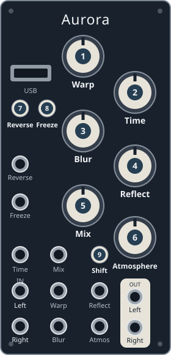

Morse
Clocked stereo VCA: audio input + clock into Freeze gate + Mix above zero.
Freeze button alone does not clock it.

Knobs and buttons
| Panel control | Function |
|---|---|
| 2 Time + CV | Pattern selection |
| 5 Mix | Output level |
| 3 Blur | Envelope attack/decay balance in 0.2; unused in 0.1 |
| 146 Warp, Reflect, Atmosphere | Unused |
| 7 Reverse button / gate | Reset pattern |
| 8 Freeze gate | Clock input |
| 98 Shift + Freeze | Cycle clock ratio: /8 → /4 → /2 → ×1 → ×2 → ×4 → ×8 |
Version differences
| Version | Difference |
|---|---|
| 0.1.0 | Three patterns: dotted-8th, slow pulse, triplet; instant attack + decay |
| 0.2.0 | Twelve patterns; Blur controls attack/decay |
Pattern changes apply at a step boundary or reset, not only the next Reset.
Details & sources
- Other knob CVs: unused.
- With Shift held, Freeze shows ratio: violet /8, blue /4, light blue /2,
white ×1, yellow ×2, orange ×4, red ×8. - Freeze flashes on ticks; Reverse on reset. Arc LEDs show pattern step/envelope.
Sources: 0.2.0 guide
and main.cpp, pattern.h, envelope.h at tags 0.1.0/0.2.0.